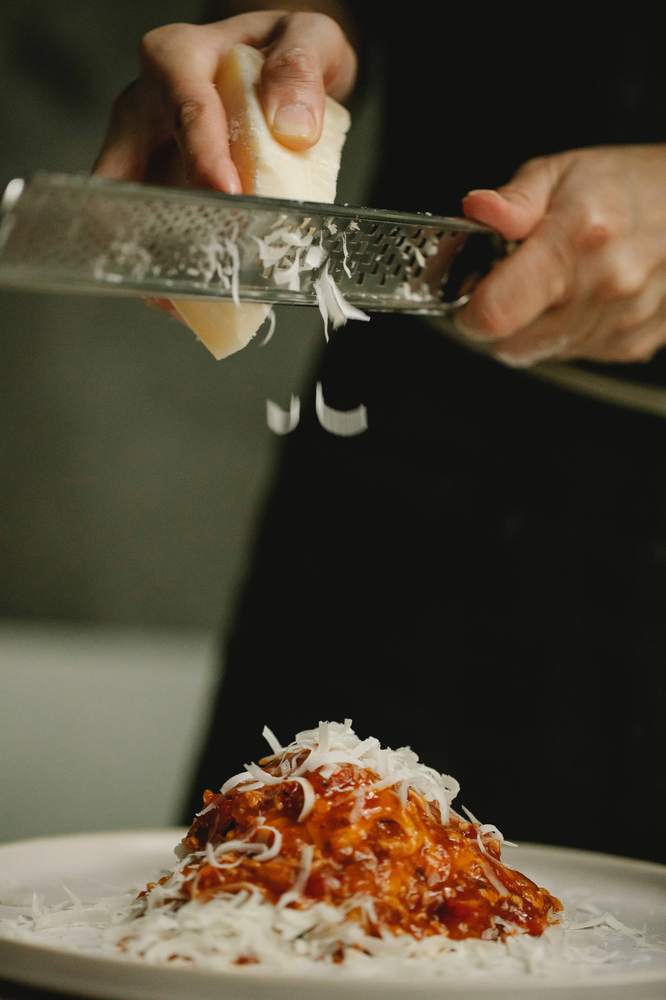
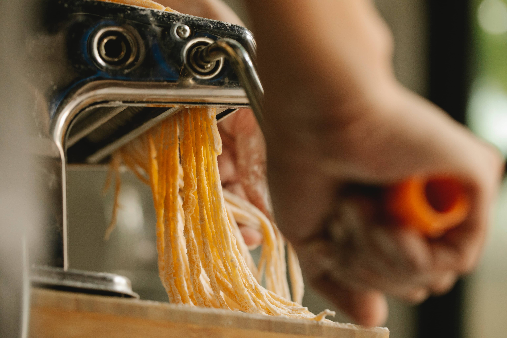

Welcome to a gastronomic odyssey, an immersive journey that transcends the boundaries of time,
inviting you to delve into the intricacies of Pasta Palete's rich history, beliefs, and
unwavering
commitment to culinary excellence. "Pasta Palete: Then and Now" beckons you to embark on a more
extended exploration, weaving through the centuries-old tales of pasta, the guiding principles
shaping our culinary beliefs, and the ceaseless pursuit of perfection propelling us into the
future.

A Culinary Tapestry Unraveled:
Our sojourn commences on the cobbled streets of ancient Italy, where pasta was more than a
staple—it
was a cultural phenomenon. "Then" invites you to step into the annals of history, where pasta
emerged as a symbol of togetherness, transcending mere sustenance. Our homage to the past
involves
not just the replication of age-old recipes but an immersive journey into the essence of those
times.
As we navigate through history, we recognize the roots that have anchored our culinary
philosophy.
We believe in the transformative power of simplicity—a belief that has withstood the test of
time.
At Pasta Palete, every dish is a manifestation of this belief, a celebration of the essence of
quality ingredients, meticulously curated to captivate discerning palates.
In our commitment to inclusivity, the "Then" narrative extends beyond the Italian borders,
embracing
the diverse range of pasta traditions worldwide. Our menu is an homage to the rich tapestry of
global culinary heritage, a celebration of the unique flavors and textures that define the
myriad of
pasta offerings.
At the core of our culinary philosophy lies a commitment to community. Pasta Palete isn't just a
restaurant; it's a communal space where families, friends, and individuals converge. The dining
table becomes a sacred space, echoing the belief that shared meals forge connections, and the
stories shared around it become an integral part of our identity.
The Dynamic Contemporary Narrative:
As we transition from the historical canvas to the contemporary narrative, "Now" unfurls a
vibrant
tapestry where tradition dances with modernity. Our chefs, akin to culinary artists, masterfully
employ modern techniques, global inspirations, and a dedication to culinary artistry to craft a
menu
that transcends expectations. The menu unfolds like a gallery exhibition, each dish a canvas
painted
with layers of flavors, textures, and colors that harmonize into a symphony for the senses.
Sustainability is the guiding light of our modern identity. In the "Now," Pasta Palete endeavors
to
be a responsible steward, not only of your dining experience but also of the environment. From
meticulous sourcing practices that prioritize ethical and sustainable ingredients to initiatives
aimed at minimizing our ecological footprint, we strive to leave a positive impact on the world
around us.
Striving for Culinary Elevation:
"Pasta Palete: Then and Now" is not a stagnant narrative; it's an ever-evolving journey. Our
aspiration for culinary perfection permeates every facet of our offerings, driven by an
insatiable
passion to exceed expectations. Our chefs, perpetual seekers of culinary excellence, do not
merely
master tradition; they embrace continuous innovation, pushing the boundaries of what pasta can
be.
In our relentless pursuit of growth and learning, Pasta Palete confronts the challenges and
embraces
the opportunities presented by the ever-evolving culinary landscape. Our commitment is not just
to
satisfy your palate today but to inspire and delight for years to come.

A Toast to the Future and Beyond:
As we navigate the confluence of "Then and Now," Pasta Palete extends sincere gratitude for your
presence on this extended culinary expedition. May your experience with us be more than just a
meal—it's an immersive chapter in the ever-expanding story of flavors, traditions, and
innovation.
Here's to the past, the present, and the exhilarating chapters that lie ahead in the flavorful
odyssey of Pasta Palete. Thank you for being an integral part of our extended journey. Buon
Appetito!
In the intricate symphony of flavors that defines Pasta Palete, there is a maestro orchestrating
the culinary harmony, our esteemed Editor-in-Chief. A visionary at the helm, guiding the
culinary ship through the seas of tradition and innovation, our Editor-in-Chief is more than a
mere leader; they are the heartbeat of Pasta Palete's gastronomic journey.
The Visionary Behind the Palette:
At the core of Pasta Palete's culinary narrative is the creative genius of our Editor-in-Chief.
With a discerning palate and a passion for pushing culinary boundaries, they bring a wealth of
experience and innovation to every dish on the menu. From the selection of the finest
ingredients to the crafting of avant-garde culinary creations, the Editor-in-Chief's vision
permeates every aspect of the Pasta Palete experience.
A Culinary Journey Unveiled:
The Editor-in-Chief's journey in the culinary world is a tapestry woven with threads of diverse
experiences and a relentless pursuit of excellence. Trained in the artistry of traditional
Italian cuisine, they seamlessly blend time-honored techniques with a modern flair, creating a
menu that reflects both the roots of pasta and the contemporary palate.
Their passion for pasta extends beyond the kitchen, encompassing a deep appreciation for the
cultural and historical significance of each dish. This holistic approach infuses Pasta Palete
with a unique identity, where every plate tells a story of culinary craftsmanship.
Innovating the Palate:
As the driving force behind Pasta Palete's kitchen, the Editor-in-Chief is a pioneer of culinary
innovation. Their commitment to pushing the boundaries of flavor and presentation is evident in
the menu's diverse offerings. Handmade pastas infused with unexpected flavors, imaginative
pairings that challenge conventional norms, and a dedication to culinary artistry are the
hallmarks of their creative direction.
In the culinary laboratory that is Pasta Palete's kitchen, the Editor-in-Chief encourages a
culture of experimentation and creativity. It's a place where traditional recipes are respected
but not bound by rigid rules—a space where the culinary team is inspired to explore new
horizons, ensuring that each visit to Pasta Palete is a delightful adventure.
Sustainability at the Forefront:
Beyond the realm of flavor, the Editor-in-Chief is a champion of sustainability. Recognizing the
impact of culinary practices on the environment, they have spearheaded initiatives to reduce
Pasta Palete's ecological footprint. From sourcing locally to implementing eco-friendly kitchen
practices, their commitment to sustainable gastronomy reflects a profound understanding of the
interconnectedness of food and the planet.
A Culinary Ambassador:
Our Editor-in-Chief is more than a culinary expert; they are a culinary ambassador, representing
Pasta Palete's commitment to excellence in every culinary endeavor. From collaborating with
local producers to championing the cultural richness of pasta traditions worldwide, they embody
the spirit of Pasta Palete both in and out of the kitchen.
Inspiring the Team:
Leading by example, the Editor-in-Chief inspires the Pasta Palete culinary team to strive for
culinary excellence. Their leadership style fosters a collaborative and creative environment,
nurturing a team that shares their passion for pasta and dedication to creating memorable dining
experiences.
Join Us on this Culinary Journey:
As we celebrate the artistry and innovation behind every dish at Pasta Palete, we invite you to
join us on this culinary journey guided by our exceptional Editor-in-Chief. With a vision that
blends the best of tradition and innovation, they continue to elevate Pasta Palete into a haven
for pasta enthusiasts and culinary adventurers alike.
Here's to the maestro behind the flavors, the visionary shaping our culinary destiny—our Pasta
Palete Editor-in-Chief.